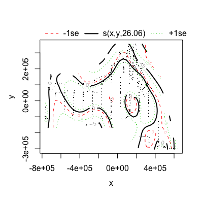

<!DOCTYPE html>
<html lang="en">
  <head>
    <meta charset="utf-8">
<title>dsm. dsm 2.1.3</title>
<meta name="viewport" content="width=device-width, initial-scale=1.0">
<meta name="author" content="
  David L. Miller
">

<link href="css/bootstrap.css" rel="stylesheet">
<link href="css/bootstrap-responsive.css" rel="stylesheet">
<link href="css/highlight.css" rel="stylesheet">
<link href="css/staticdocs.css" rel="stylesheet">

<!--[if lt IE 9]>
  <script src="http://html5shim.googlecode.com/svn/trunk/html5.js"></script>
<![endif]-->
  </head>

  <body>
    <div class="navbar">
  <div class="navbar-inner">
    <div class="container">
      <a class="brand" href="#">dsm 2.1.3</a>
      <div class="nav">
        <ul class="nav">
          <li><a href="index.html"><i class="icon-home icon-white"></i> Index</a></li>
        </ul>
      </div>
    </div>
  </div>
</div>

    <div class="container">
      <header>
        
      </header>
      
      <h1>Fit a density surface model to segment-specific estimates of abundance
or density.</h1>

<div class="row">
  <div class="span8">
    <h2>Usage</h2>
    <pre>dsm(formula, ddf.obj, segment.data, observation.data, engine = "gam", convert.units = 1, 
  family = quasipoisson(link = "log"), group = FALSE, gamma = 1.4, control = list(keepData = TRUE), 
      availability = 1, strip.width = NULL, segment.area = NULL, ...)</pre>
    
    <h2>Arguments</h2>
    <dl>
      <dt>formula</dt>
      <dd>formula for the surface. This should be a
  valid
  <code><a href='http://www.inside-r.org/r-doc/stats/glm'>glm</a></code>/<code><a href='http://www.inside-r.org/r-doc/mgcv/gam'>gam</a></code>/<code><a href='http://www.inside-r.org/r-doc/mgcv/gamm'>gamm</a></code>
  formula. See "Details", below, for how to define the
  response.</dd>
      <dt>ddf.obj</dt>
      <dd>result from call to <code><a href='http://www.inside-r.org/r-doc/mrds/ddf'>ddf</a></code> or
  <code><a href='http://www.inside-r.org/r-doc/Distance/ds'>ds</a></code>. If <code>ddf.obj</code> is
  <code>NULL</code> then strip transects are assumed.</dd>
      <dt>segment.data</dt>
      <dd>segment data, see
  <code><a href='dsm-data.html'>dsm-data</a></code>.</dd>
      <dt>observation.data</dt>
      <dd>observation data, see
  <code><a href='dsm-data.html'>dsm-data</a></code>.</dd>
      <dt>engine</dt>
      <dd>which fitting engine should be used for the
  DSM
  (<code><a href='http://www.inside-r.org/r-doc/stats/glm'>glm</a></code>/<code><a href='http://www.inside-r.org/r-doc/mgcv/gam'>gam</a></code>/code<a href='http://www.inside-r.org/r-doc/mgcv/gamm'>gamm</a>/<code><a href='http://www.inside-r.org/r-doc/mgcv/bam'>bam</a></code>).</dd>
      <dt>convert.units</dt>
      <dd>value to alter length or width for
  calculation of the offset, applied to `segment.area` if
  used.</dd>
      <dt>family</dt>
      <dd>response distribution (popular choices
  include <code><a href='http://www.inside-r.org/r-doc/stats/family'>quasipoisson</a></code>, <code><a href='http://www.inside-r.org/r-doc/mgcv/Tweedie'>Tweedie</a></code>
  and <code><a href='http://www.inside-r.org/r-doc/mgcv/negbin'>negbin</a></code>. Defaults to
  <code>quasipossion</code>.</dd>
      <dt>group</dt>
      <dd>should group abundance/density be modelled
  rather than individual abundance/density? This
  effectively sets the <code>size</code> column in
  <code>observation.data</code> to be 1.</dd>
      <dt>control</dt>
      <dd>the usual <code>control</code> argument for a
  <code>gam</code>, <code>keepData</code> must be <code>TRUE</code> for
  variance estimation to work.</dd>
      <dt>availability</dt>
      <dd>an availability bias used to scale
  the counts/estimated counts by. If we have <code>N</code>
  animals in a segment, then <code>N/availability</code> will be
  entered into the model. Uncertainty in the availability
  is not handled at present.</dd>
      <dt>gamma</dt>
      <dd>parameter to <code>gam()</code> set to a value of
  1.4 (from advice in Wood (2006)) such that the
  <code>gam()</code> is inclined to not 'overfit'.</dd>
      <dt>strip.width</dt>
      <dd>if <code>ddf.obj</code>, above, is
  <code>NULL</code>, then this is where the strip width is
  specified. Note that this is the total width, i.e. right
  truncation minus left truncation.</dd>
      <dt>segment.area</dt>
      <dd>if `NULL` (default) segment areas
  will be calculated by multiplying the `Effort` column in
  `segment.data` by the truncation distance for the
  `ddf.obj` or by `strip.width`. Alternatively a vector of
  segment areas can be provided (which must be the same
  length as the number of rows in `segment.data`) or a
  character string giving the name of a column in
  `segment.data` which contains the areas.</dd>
      <dt>...</dt>
      <dd>anything else to be passed straight to
  <code><a href='http://www.inside-r.org/r-doc/stats/glm'>glm</a></code>/<code><a href='http://www.inside-r.org/r-doc/mgcv/gam'>gam</a></code>/<code><a href='http://www.inside-r.org/r-doc/mgcv/gamm'>gamm</a></code>/<code><a href='http://www.inside-r.org/r-doc/mgcv/bam'>bam</a></code>.</dd>
    </dl>
    
    <div class="Value">
      <h2>Value</h2>
      
      <p>a <code><a href='http://www.inside-r.org/r-doc/stats/glm'>glm</a></code>/<code><a href='http://www.inside-r.org/r-doc/mgcv/gam'>gam</a></code>/<code><a href='http://www.inside-r.org/r-doc/mgcv/gamm'>gamm</a></code>
  object, with an additional element, <code>ddf</code> which
  holds the detection function object.</p>
  
    </div>

    <div class="Description">
      <h2>Description</h2>
      
      <p>Given a detection function analysis, construct a density
  surface model (DSM) based on environmental covariates.</p>
  
    </div>

    <div class="Details">
      <h2>Details</h2>
      
      <p>The response can be one of the following: <table><tr><td>
  <code>N</code>, <code>abundance</code> </td>
<td> count in each segment</td>
</tr><tr><td>
  <code>Nhat</code>, <code>abundance.est</code> </td>
<td> estimated
  abundance per segment, estimation is via a
  Horvitz-Thompson estimator. This should be used when
  there are covariates in the detection function.</td>
</tr><tr><td>
  <code>presence</code> </td>
<td> interpret the data as
  presence/absence (reember to change the <code>family</code>
  argument to <code>binomial()</code></td>
</tr><tr><td> <code>D</code>, <code>density</code>
  </td>
<td> density per segment</td>
</tr></table></p>
  
      <p>For large models, <code>engine="bam"</code> with
  <code>method="fREML"</code> may be useful. Models specified for
  <code>bam</code> should be as <code>gam</code>. READ
  <code><a href='http://www.inside-r.org/r-doc/mgcv/bam'>bam</a></code> before using this option, it is
  considered EXPERIMENTAL at the moment. In particular note
  that the default basis choice (thin plate regression
  splines) will be slow and that in general fitting is less
  stable than when using <code>gam</code>. For negative binomial
  response, theta must be specified when using <code>bam</code>.</p>
  
    </div>

    <div class="References">
      <h2>References</h2>
      
      <p>Hedley, S. and S. T. Buckland. 2004. Spatial models for
  line transect sampling. JABES 9:181-199.</p>
  
      <p>Miller, DL, ML Burt, EA Rexstad and L Thomas (2013).
  Spatial models for distance sampling data: recent
  developments and future directions. Methods in Ecology
  and Evolution.
  (http://dill.github.io/papers/dsm-paper.pdf)</p>
  
      <p>Wood, S.N. 2006. Generalized Additive Models: An
  Introduction with R. CRC/Chapman & Hall.</p>
  
    </div>
    
    <h2 id="examples">Examples</h2>
    <pre class="examples"><div class='input'>library(Distance)
library(dsm)

# load the Gulf of Mexico dolphin data (see ?mexdolphins)
data(mexdolphins)

# fit a detection function and look at the summary
hr.model <- ds(mexdolphins$distdata, max(mexdolphins$distdata$distance),
               key = "hr", adjustment = NULL)
</div>
<strong class='message'>Fitting hazard-rate key function</strong>
<strong class='message'>AIC= 841.253</strong>
<strong class='message'>No survey area information supplied, only estimating detection function.
</strong>
<div class='input'>summary(hr.model)
</div>
<div class='output'>
Summary for distance analysis 
Number of observations :  47 
Distance range         :  0  -  7847.467 

Model : Hazard-rate key function 
AIC   : 841.2527 

Detection function parameters
Scale Coefficients:  
            estimate        se
(Intercept) 7.982653 0.9531634

Shape parameters:  
            estimate        se
(Intercept)        0 0.7835098

                      Estimate        SE        CV
Average p            0.5912848  0.222433 0.3761859
N in covered region 79.4879222 30.807278 0.3875718
</div>
<div class='input'>
# fit a simple smooth of x and y
mod1<-dsm(N~s(x,y), hr.model, mexdolphins$segdata, mexdolphins$obsdata)
</div>
<strong class='warning'>Warning message:
the condition has length > 1 and only the first element will be used</strong>
<div class='input'>summary(mod1)
</div>
<div class='output'>
Family: quasipoisson 
Link function: log 

Formula:
N ~ s(x, y) + offset(off.set)
<environment: 0x10aa76698>

Parametric coefficients:
            Estimate Std. Error t value Pr(>|t|)    
(Intercept) -18.4087     0.3942   -46.7   <2e-16 ***
---
Signif. codes:  0 ‘***’ 0.001 ‘**’ 0.01 ‘*’ 0.05 ‘.’ 0.1 ‘ ’ 1

Approximate significance of smooth terms:
         edf Ref.df    F p-value    
s(x,y) 26.06  28.15 5.61  <2e-16 ***
---
Signif. codes:  0 ‘***’ 0.001 ‘**’ 0.01 ‘*’ 0.05 ‘.’ 0.1 ‘ ’ 1

R-sq.(adj) =  0.113   Deviance explained =   44%
GCV score = 42.985  Scale est. = 37.611    n = 387
</div>
<div class='input'>
# create an offset (in metres)
# each prediction cell is 444km2
off.set <- 444*1000*1000

# predict over a grid
mod1.pred <- predict(mod1, mexdolphins$preddata, off.set)

# calculate the predicted abundance over the grid
sum(mod1.pred)
</div>
<div class='output'>[1] 47033.79
</div>
<div class='input'>
# plot the smooth
plot(mod1)
</div>
<p></p></pre>
  </div>
  <div class="span4">
    <!-- <ul>
      <li>dsm</li>
    </ul>
    <ul>
      
    </ul> -->
      
    
    <h2>Author</h2>
    
  David L. Miller

    
  </div>
</div>
      
      <footer>
      <p class="pull-right"><a href="#">Back to top</a></p>
<p>Built by <a href="https://github.com/hadley/staticdocs">staticdocs</a>. Styled with <a href="http://twitter.github.com/bootstrap">bootstrap</a>.</p>
      </footer>
    </div>
  </body>
</html>